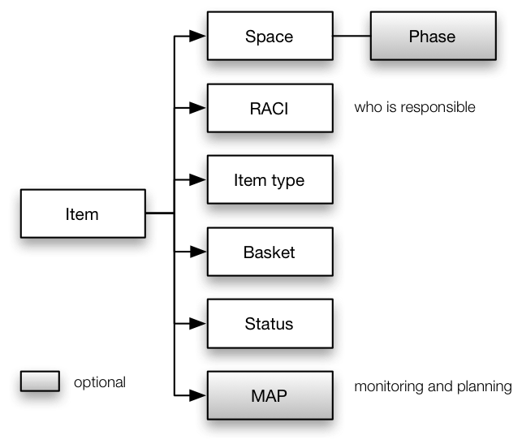

To support effective teamwork items need to have a number of tags and other
properties. Tags and other properties help you categorizing and structuring your set of
items.
Figure 1 shows
the most important and required set of tags and other properties for items managed with
Genji. Properties are being shown as "fields" on
forms.

Main tags and properties
The following properties are mandatory:
- The space mostly serves to control access to items. The phase further
structures a space along the time axis, for example in releases or sprints. Phases
are optional.
- RACI refers to a scheme where you associate a number of roles with an item,
like who is currently responsible for this item, who should be informed in case the
item is changed, etc. Each iteem has to have a person responsible for it.
- The item type classifies an item more precisely, for example as a feature, a
problem report, a customer request for a quotation, or a simple action. Item types
may determine workflows and other item properties. You can have an item type of
„unknown" for items you haven't analyzed yet.
- The basket determines the position of an item in your personal workflow
model.
- The state determines the items work state in the overall workflow model.
Typical values are „open“, „closed“, „analyzed“, „suspended“.
- A title or brief summary is mandatory.
- A description with more detail is optional.
- Genji always keeps a complete history of
all changes.
The following tags and other properties are optional. Furthermore you can add any number
of custom properties to items.
- A log with comments of users
- The MAP (Monitoring and Planning) set of properties permits to monitor work
progress in an objective and structured way using the Earned Value Method.
Furthermore, properties are provided to order items in terms of value, priority, and
risk. MAP properties are optional.
- The subsystem (component) permits you to structure your space without using
subspaces. Then each item belongs to a subsystem or component.
- The class permits you to further categorize items, e.g., documentation,
software, hardware
- The release of the space this item was caused by. For example, you may
have found a problem in software SWB, release 4.3. This will be resolved with
release 4.4.
- The release of the space which is to resolve this item.
- A build identifies the build number of an item. For example, you may have
found a problem in software SWB, release 4.3, build 1247.
-
Priority helps you to organize items
according to some priority scheme, like „now“,
„soon“, „sometimes“.
-
Severity defines the impact on your
business if the item is or is not taken care of, like „high“, „medium“, „low“ or
„blocker“, „major“, „minor“.
- A start date defines when work on this
item should begin.
- An end date defines when this item
should be resolved.
In general you should keep the number of properties small, since they have to be entered
and maintained. You can define any other tags you may need.